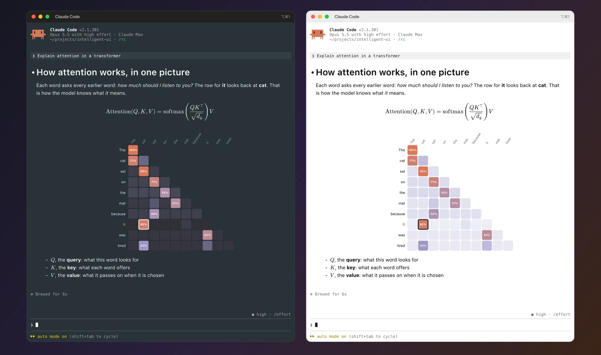
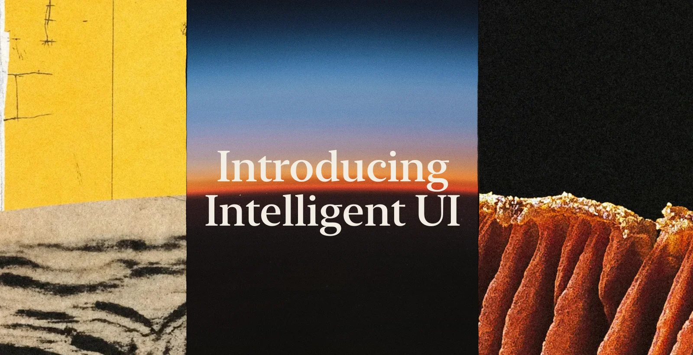

Rendered Markdown
Headings, tables, task lists, block quotes and code with syntax colours, in your terminal's own font.
Real Markdown, LaTeX math, charts and diagrams, typeset with Typst and drawn right in your terminal. Only the drawing changes. The answer stays Markdown.
/plugin install cc-intelligent-ui --marketplace razorback16/cc-intelligent-ui

Why
Tables line up, equations look like a paper, and Claude can draw a chart when a picture explains more than words.
Headings, tables, task lists, block quotes and code with syntax colours, in your terminal's own font.
Inline $…$ and display $$…$$ math, typeset.
Claude writes Typst with CeTZ, cetz-plot and fletcher. The drawings use your theme's colours and work offline.
Images in an answer, images Claude sends, Markdown files and images you paste all show in the transcript.
Select and copy text with the mouse, as you do with normal text.
In plan mode, the plan shows rendered, with an approve, edit or reject question under it.
Claude Code's own colours by default, or VS Code's Markdown preview. Or make your own with /iui theme.
Gallery
Each picture is one Claude answer in Claude Code. Switch the terminal to see the same answer in the other theme.
Headings, an image, a table, inline math, a code block with syntax colours, a task list and a block quote, in one answer.
show me what Markdown you can drawEuler's identity, the Gaussian integral, Maxwell's equations, a matrix and a piecewise function.
write out Maxwell's equationsTypst calculates each pixel of the Mandelbrot set at render time: 100,000 pixels, up to 120 iterations each.
draw the Mandelbrot setA recursive fractal tree and a rainbow Lissajous curve, drawn with CeTZ.
draw a fractal tree next to a Lissajous curveA damped oscillator and its exponential envelope, drawn with cetz-plot.
plot a damped oscillatorAn agent loop and the First Isomorphism Theorem, drawn with fletcher.
diagram the agent loop and the first isomorphism theorem
Install
You need Claude Code 2.1.298 or later, Typst 0.15 and macOS.
$ brew install typst
/plugin install cc-intelligent-ui --marketplace razorback16/cc-intelligent-ui
It works at once. Run /iui details to see why pictures do or do not show.
“Plot this CSV.” “Draw the state machine.” “Explain this with a diagram.”
| Terminal | Pictures | What to do |
|---|---|---|
| kitty 0.28+, Ghostty, cmux | Yes | Nothing |
| iTerm2 3.6+ | Yes | Run /iui setup one time |
| Rio 0.5.27+ | Not tested | Set CLAUDE_CODE_FORCE_TERMINAL_IMAGES=1 |
| ssh | Yes | From kitty or Ghostty |
| tmux, screen | No | — |
| WezTerm, Warp, Terminal.app, VS Code, others | No | — |
/iui | Shows the state and a problem that keeps pictures away |
/iui on · off | Turns the pictures on or off |
/iui theme <name> | claude-code, vscode-modern, vscode or your own |
/iui size <80–200> | Text size in percent of your terminal text |
/iui grab | Copies the text under your last mouse selection of pictures |